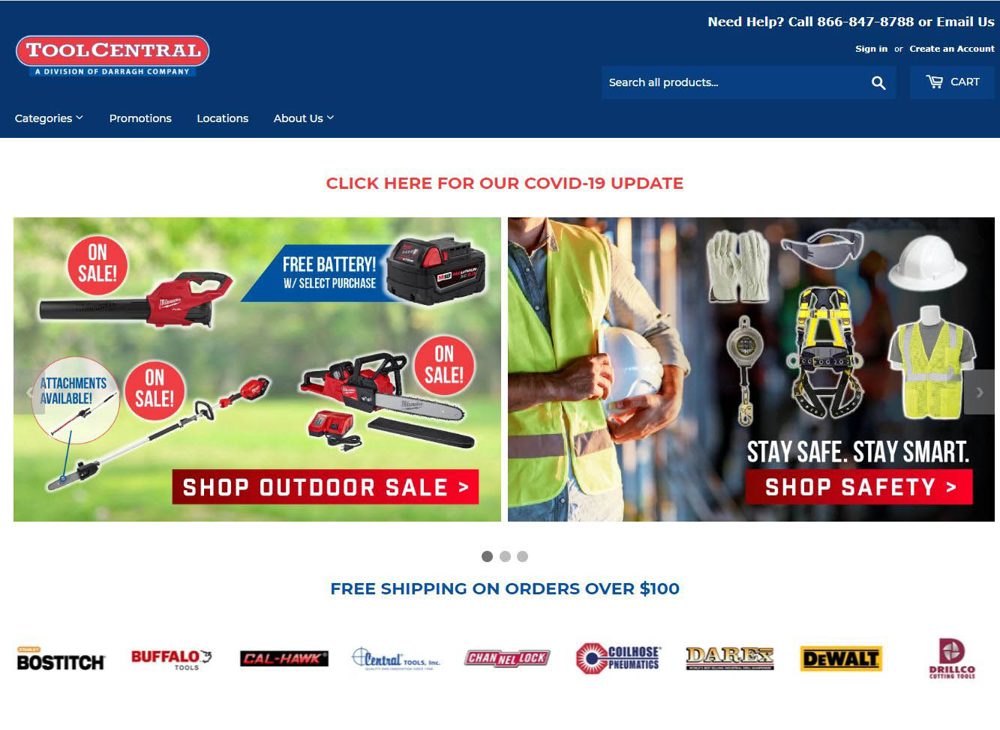
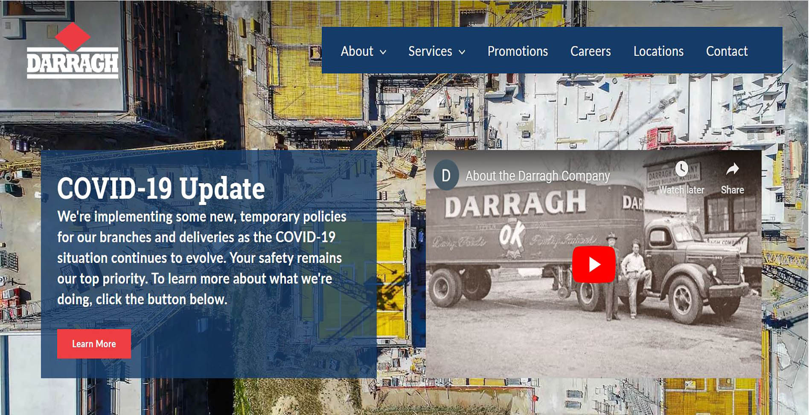
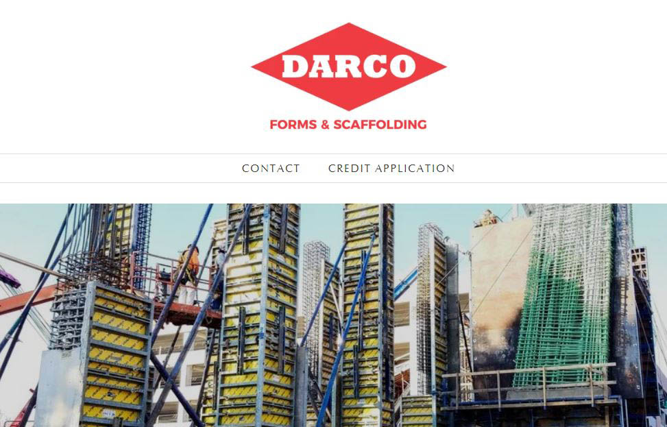
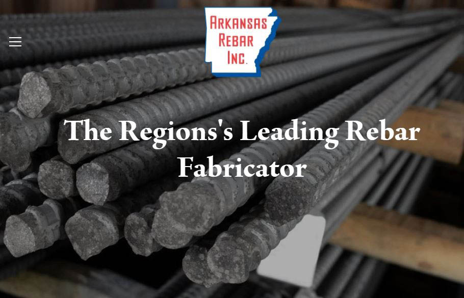
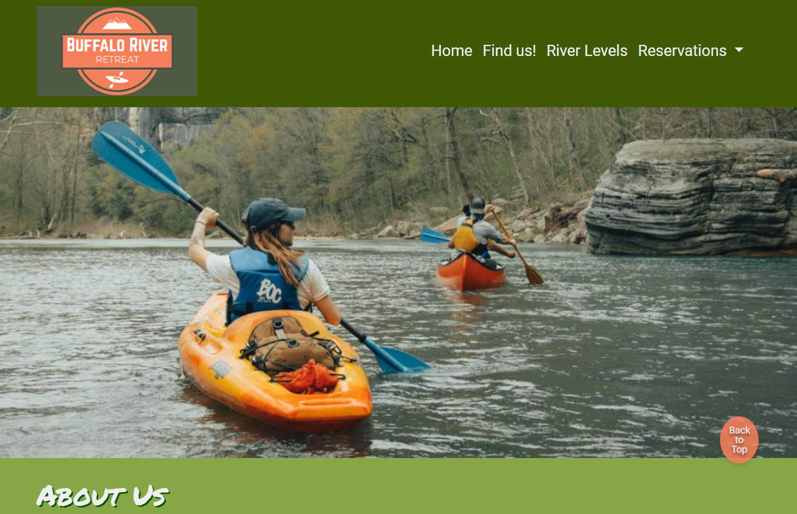
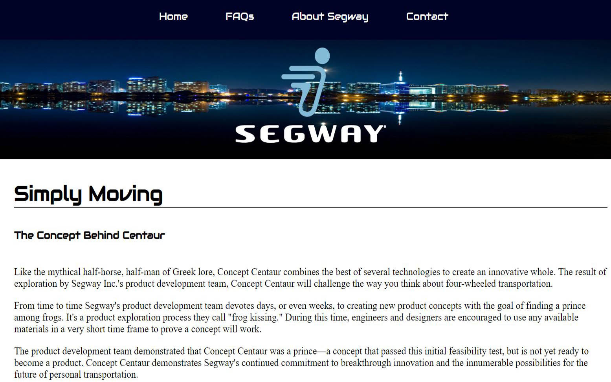
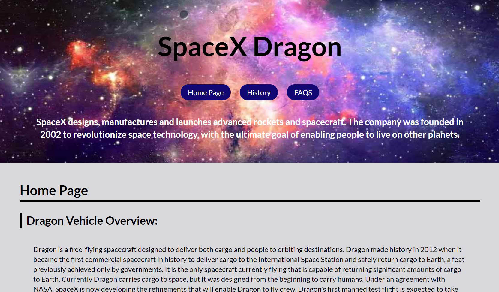
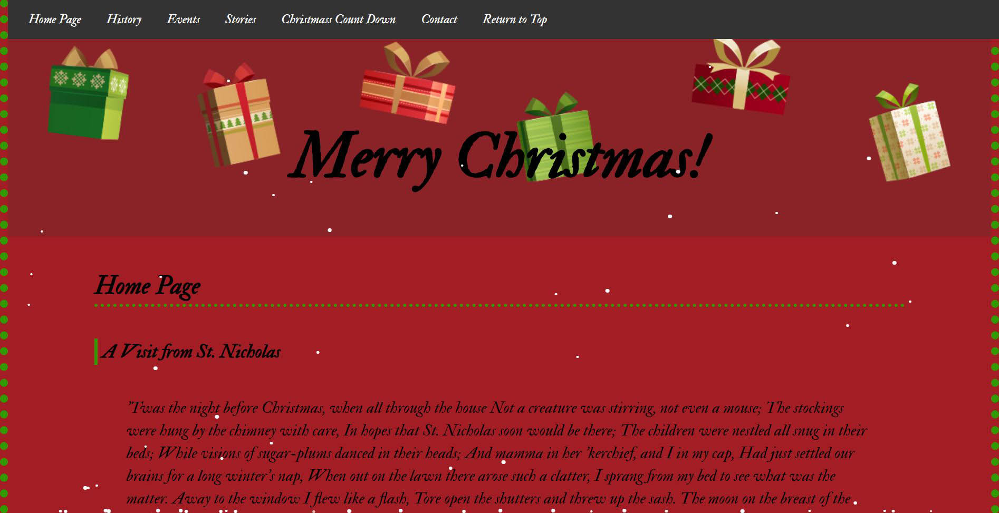

Tool Central

E-commerce sited dedicated to the selling of all Darragh Company's construction and industrial tools. The site is built to provide the customer with easy access to all the company's equipment and deals. While I did not design the original site I have made improvements and add pages to the site. I also update the site with new deals and content along with maintaining all the available products.
Visit
Darragh

The Darragh site is the main site for Darragh Company. This site lists all the services provided by the company and provides informaion about careers. I was not the main designer for this site but do maintain the site and make any major changes as needed.
Visit
Darco

Darco is a division of Darragh. The website is used to advertise company information and services. I designed and build the site on the Shopify platform.
Visit
Arkansas Rebar

Arkansas Rebar is a division of Darragh. The website is used to advertise company information and services. I designed and build the site on the Shopify platform. The site also comes with a unit conversion calculator built using Javascript.
Visit
Buffalo River Retreat

The Buffalo River Retreat was a team project. We were tasked with creating a fondation site for a proposed cabin rental and canoe company. We were tasked with creating a logo and name for the company on top of overall site creation. This site not only presents the company image but also provides visitors with the ability to reserve rentals and view river levels.
Visit
Segway

The Segway site was an individual class assignment. The site consists of one page with dynamic scrolling. The site represents all the required informaion in an clear and appealing manner.
Visit
Dragon

Dragon was an assigned project used to display the SpaceX Dragon. The site was used to show what students had learned through out the semester.
Visit
Christmas

This website was my first ever multipage website. It is a simple site used to show what was learned within the semester.
Visit